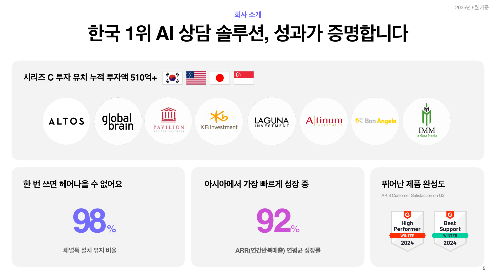
※ 레퍼런스 이미지 자리 (그쪽 제작 예정)
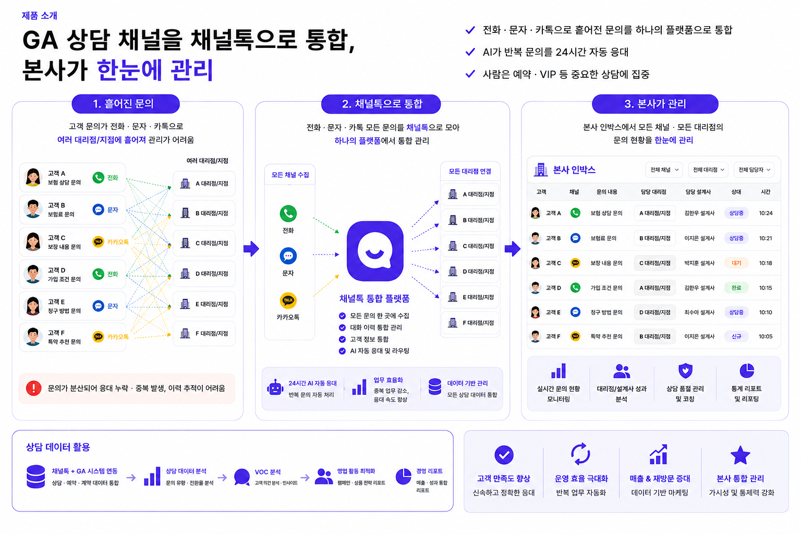
채널톡은 이 세 가지 문제를, 각 팀의 하루 속에서 하나씩 풉니다.
소통은 개인폰에 흩어져 있고, 본사엔 결과 숫자만 남습니다.
전국 수백 명 설계사가 각자 개인 휴대폰으로 고객과 전화·카톡을 합니다. 편하지만 이 소통은 오롯이 설계사 개인의 것, 본사는 무슨 대화가 오가는지 알 수 없습니다.
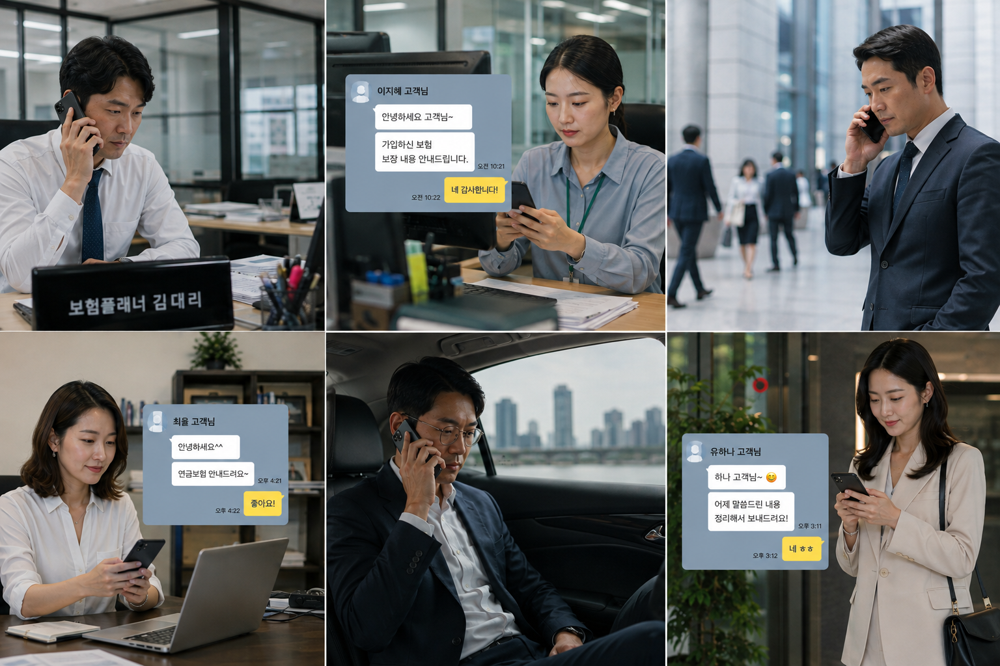
어떻게 영업하는지 파악하고 잘 지원하기 위해, 본사는 전국 설계사의 활동을 모으고 트래킹하려 시도합니다. 그런데…
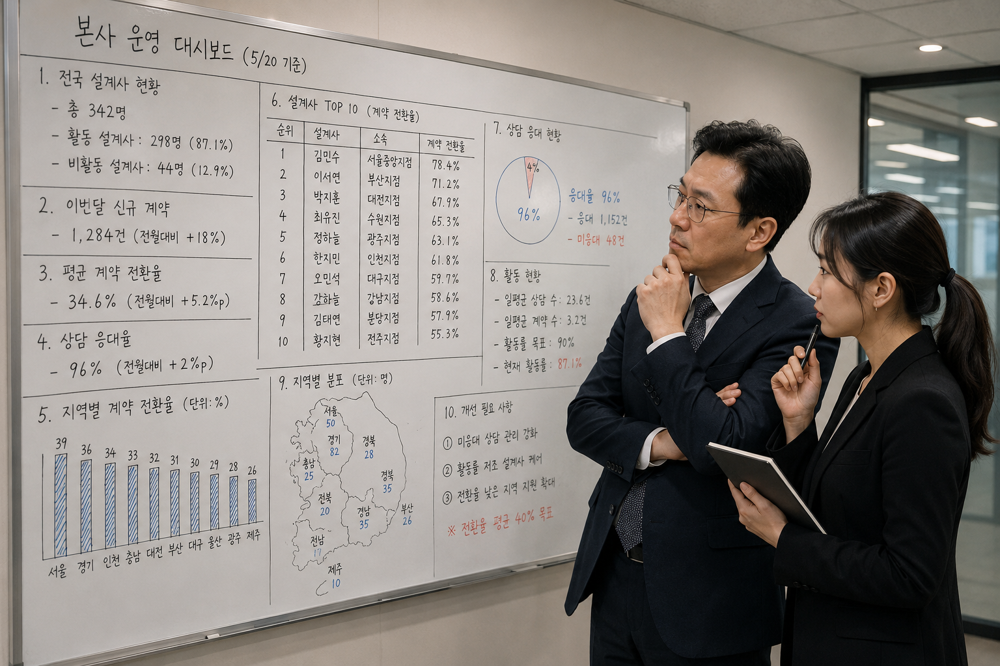
상담이 개인폰에 있으니 과정은 안 보이고, 계약 건수·매출 같은 ‘결과’ 대시보드로만 설계사를 판단합니다. 왜 이런 결과가 났는지는 알 수 없습니다.
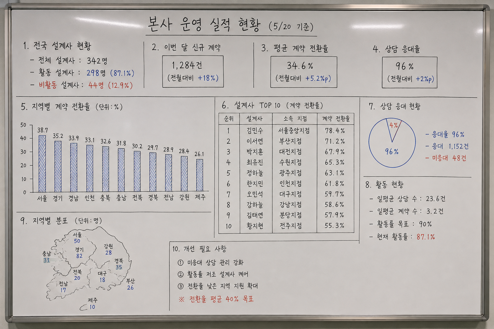
어떤 설계사는 계약을 잘 따는데, 어떤 상담·어떤 응대로 그런지 과정이 안 남습니다. 우수 노하우는 개인에게 갇히고, 조직은 그걸 복제하지 못합니다.
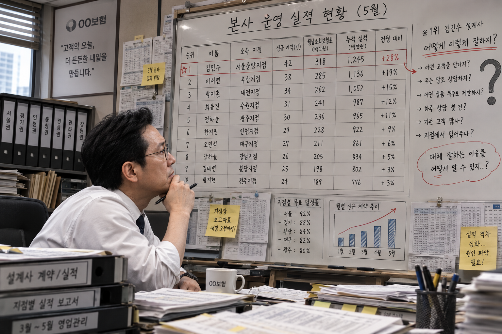
퇴사하면 개인폰에 있던 고객과의 상담 히스토리가 통째로 사라집니다. 남는 건 이름·번호뿐, 인수인계 받은 설계사도, 본사도 맥락이 없어 처음부터 다시 시작합니다.
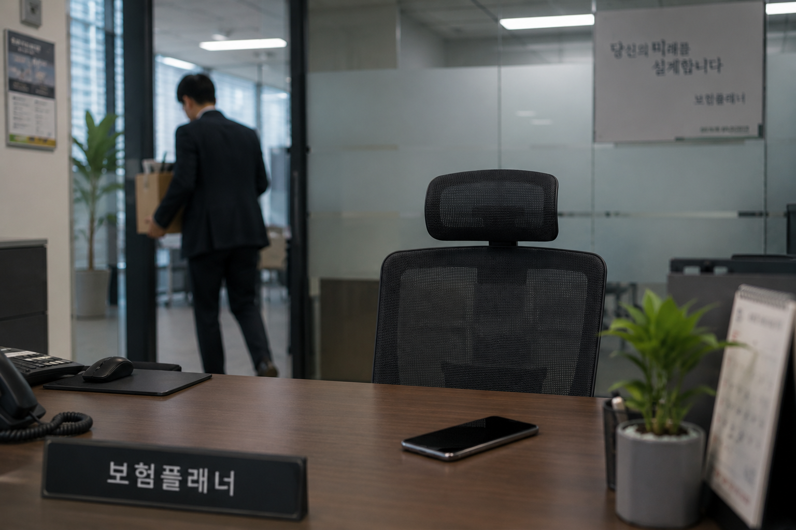
설계사·고객 소통을 개인폰이 아니라 본사 채널톡으로. 설계사 편의는 그대로, 모든 상담이 본사에 자동 기록됩니다.
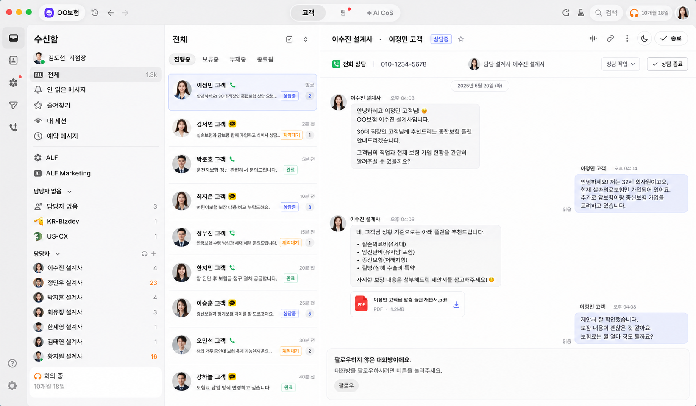
설계사별 상담 건수·응대·전환 ‘과정’이 본사 대시보드에 실시간으로 쌓입니다. 누가 어디서 막히는지, 어떤 상담이 계약으로 이어지는지 과정으로 파악합니다.
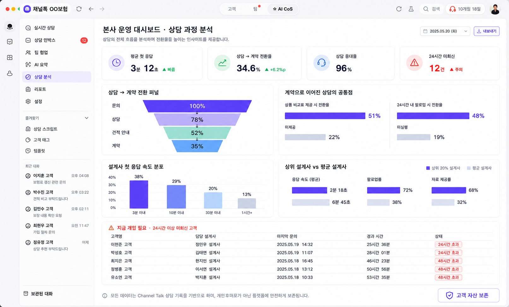
상담 데이터가 쌓이면 CoS가 우수 설계사의 상담 패턴을 분석합니다."상위 전환 설계사는 어떤 상담을 하나?"에 답하고, 성공 요인을 데이터로 보여줍니다.
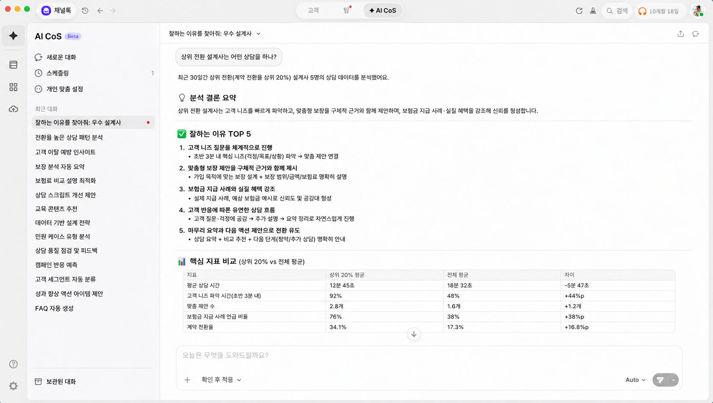
CoS가 뽑은 우수 상담 패턴을 영업 스크립트·응대 가이드로 설계해 전 설계사에게 전파합니다.한 명의 노하우가 조직 전체의 실력이 됩니다.
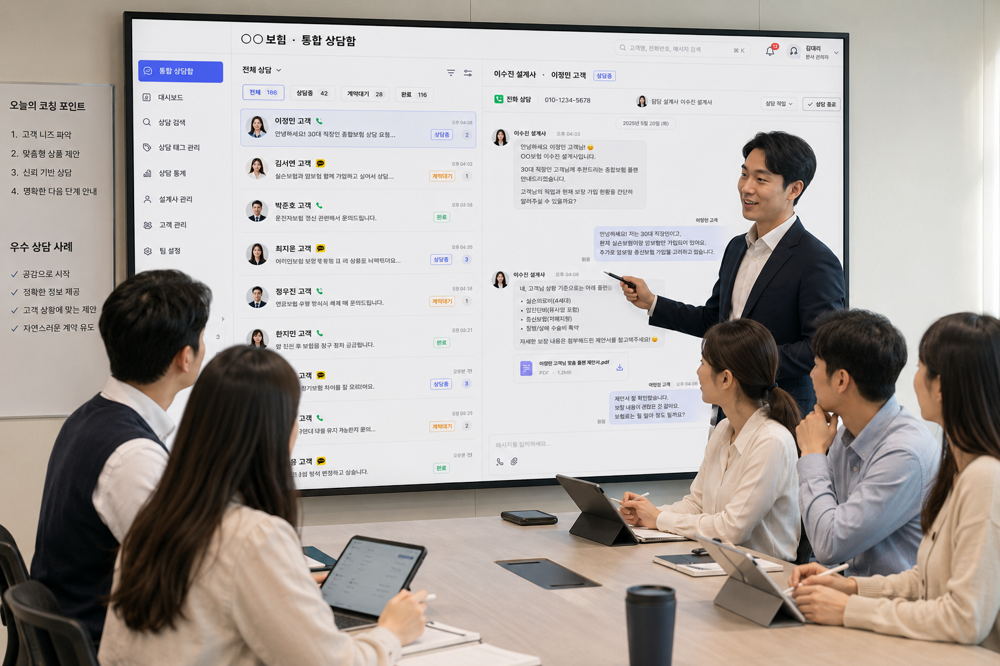
퇴사·이관돼도 상담이 본사에 그대로 쌓여, 고객 히스토리가 승계됩니다. 본사는 소중한 고객 자산을 지킵니다.
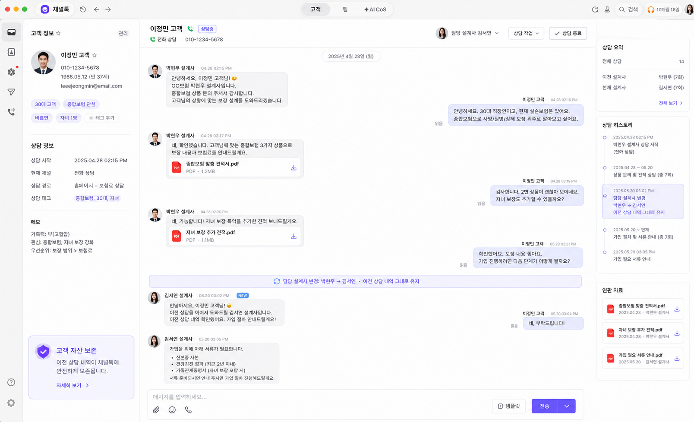
전화는 '지금 당장'을 요구하는데, 바쁜 고객의 '지금'은 안 됩니다.
아이·노후를 생각하던 이고객 님이 보험 가입을 마음먹습니다. 계약하고 싶은 마음은 충분한데, 바빠서 전화는 받기 어려운 상황입니다.
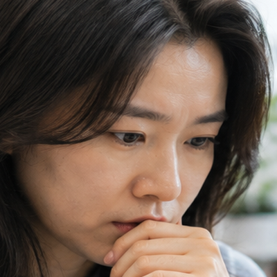
박현우 FC는 상담이 뜨면 곧장 전화를 겁니다. 그의 영업은 오직 전화, 채팅은 안 합니다. "전화로 설명해야 계약이 된다"는 방식입니다.
이고객 님은 회의 중·업무 중이라 전화를 못 받습니다. 바쁜 직장인에게 낮 시간 전화는 부담이죠. 부재중. 전화는 ‘지금 당장’을 요구하는데, 고객의 ‘지금’은 안 됩니다.
박현우는 다시 전화, 또 부재중. 이고객 님은 모르는 번호라 더 안 받습니다. 그렇게 며칠이 흐르고, 뜨겁던 관심이 식어갑니다.
결국 이고객 님은 가입을 미루거나, 급하면 다이렉트·다른 설계사로 가버립니다.골든타임을 놓친 계약이 그대로 사라집니다.
전화라 상담 내용이 안 남아, 박현우는 어떤 리드가 왜 식었는지 모릅니다.하루 수십 통 걸어도 연결률은 낮고, 본사도 이 누수를 못 봅니다.
상담이 뜨면 전화가 아니라 카톡·채팅으로 말을 겁니다. 고객은 회의 중이어도 부담 없이 편할 때 답장하면 됩니다. 서로 엇갈리던 악순환이 사라집니다.
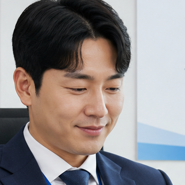
전화를 못 받아도 끝이 아닙니다."채팅으로 이어서 상담하실래요?" 문자가 자동 발송돼, 고객이 편할 때 링크로 들어와 상담을 이어갑니다.유실콜을 채팅으로 회수합니다.
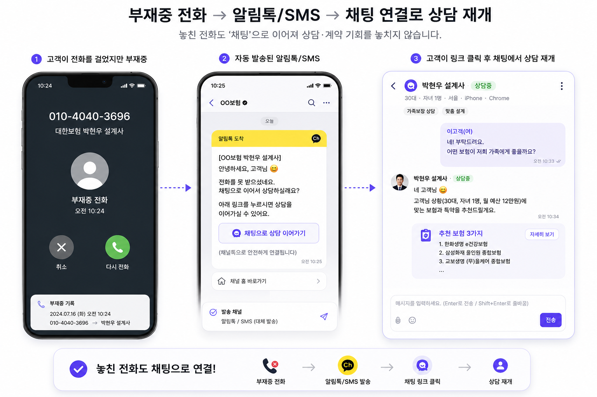
이고객 님은 퇴근길에 답장합니다. 며칠에 걸친 대화도 하나의 채팅방에서 이어져, 관심이 식기 전에 상담이 계속됩니다.
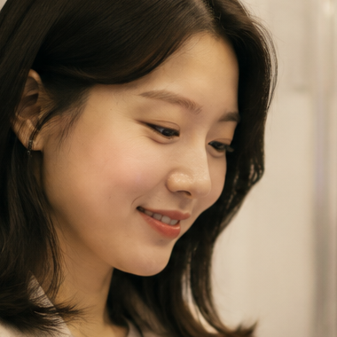
고객이 물어도 상품·특약이 너무 많아 막막할 때, 설계사가 CoS에게 바로 물어봅니다.
CoS가 고객 상황에 맞는 상품·비교·프로모션을 답하면, 그대로 고객에게 안내, 신입도 베테랑처럼 상담합니다.
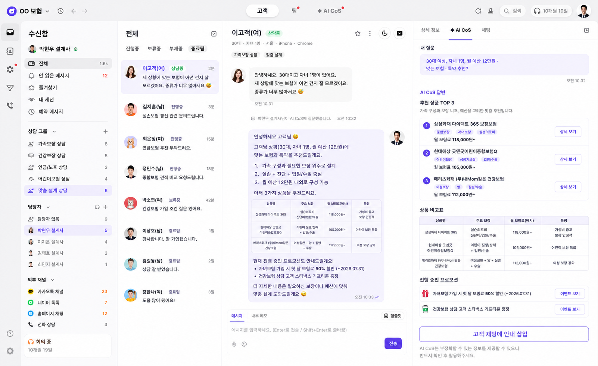
관심이 뜨거운 순간 즉시 응대하고 맞춤 상품을 제시해, 고객이 식기 전에 계약까지 갑니다.다이렉트·경쟁으로 새던 리드를 자사 계약으로 전환합니다.
같은 고객의 전화 상담(녹취·요약)과 채팅 내용이 하나의 상담 탭에 전부 기록됩니다. 어떤 채널로 오갔든 맥락은 하나, 설계사도 본사도 전체 히스토리를 한눈에 봅니다.
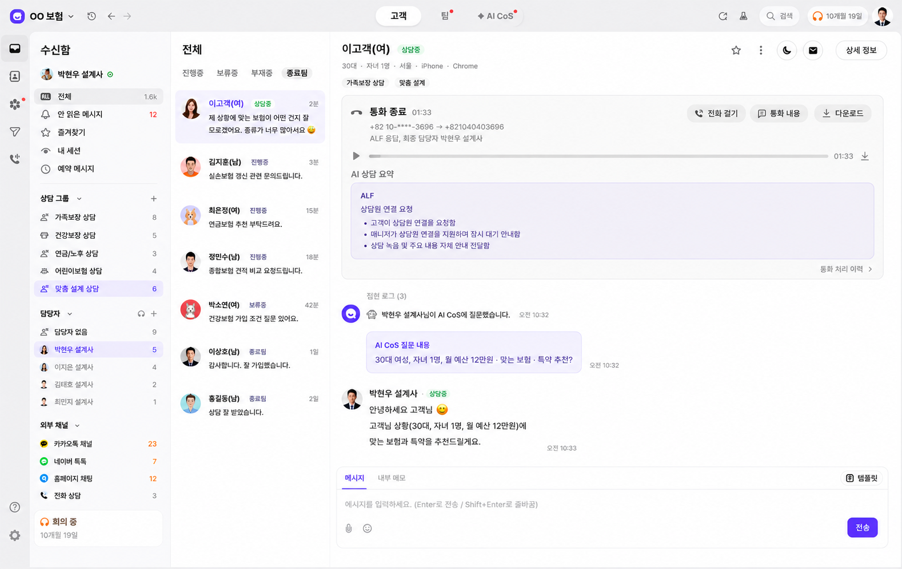
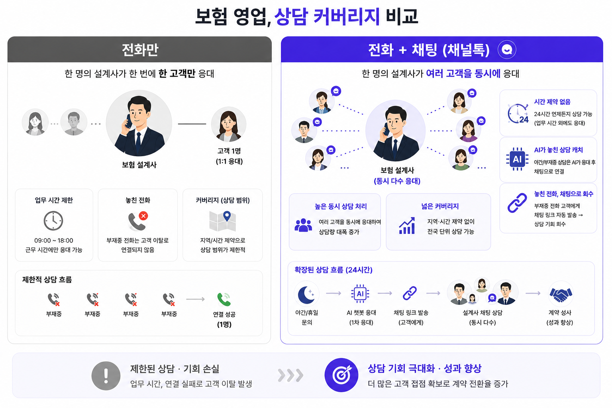
단순·반복 문의가 쏟아져, 정작 설계사 지원 업무를 못 합니다.
신입 정민 설계사는 상품·특약·서류·전산·규정을 몰라 본사에 끊임없이 문의합니다. 보험은 상품과 규정이 복잡해, 현장에서 물어볼 게 끝이 없습니다.
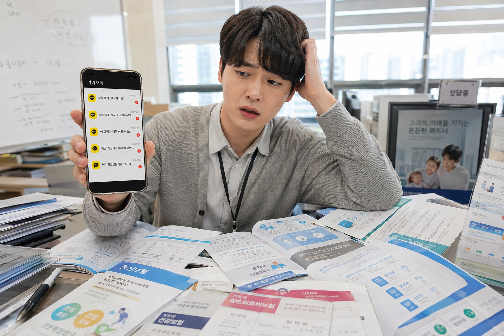
전화하면 통화중·부재중. 급한데 답을 못 받아 고객 앞에서 "확인 후 연락드릴게요", 상담이 끊기고 신뢰가 깎입니다.
전국 설계사의 "이 상품 수수료?" "서류 어디서?" 같은 반복 문의가 전화·카톡으로 동시에 쏟아집니다. 수민 매니저는 하루 종일 응대만 합니다.
같은 질문에 매번 수기로 답하고, 정답은 고참 한 명의 머릿속에만 있습니다. 그 사람이 자리를 비우면 아무도 답할 수 없습니다.
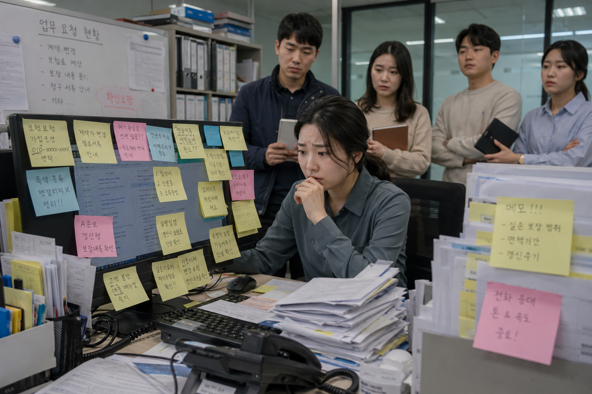
반복 응대에 파묻혀 설계사 교육·코칭·관리 같은 진짜 지원 업무를 계속 뒤로 미룹니다. 지원팀이 지원을 못 하는 역설입니다.
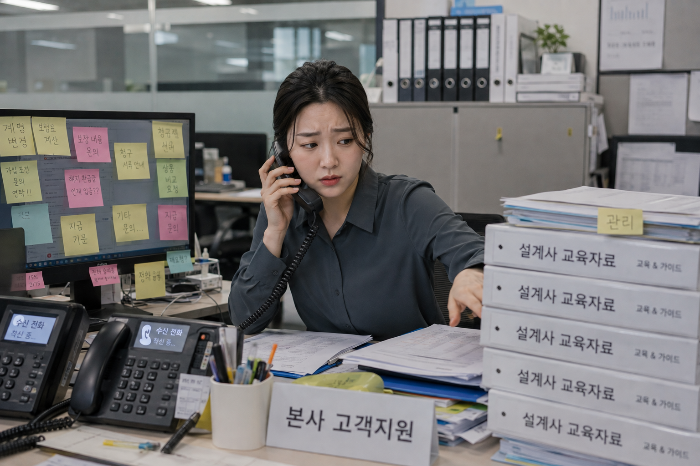
고객은 저녁·주말에 시간이 나는데, 그때 본사는 닫혀 있습니다. 설계사는 답을 못 구해 영업이 그 자리에서 멈춥니다.
상품·서류·규정·전산 반복 문의를 AI(ALF)가 24시간 즉답합니다.밤·주말에도 현장에서 바로 해결, 본사가 닫혀 있어도 영업은 안 멈춥니다.
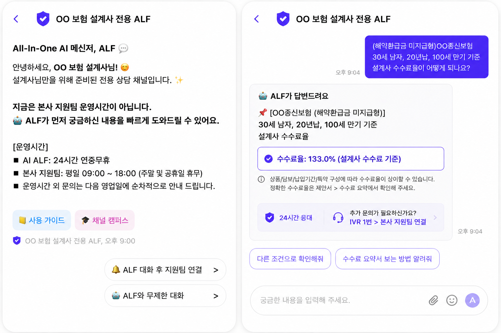
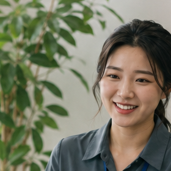
상품·규정·공지·매뉴얼을 AI가 학습해 출처 근거와 함께 정확히 답합니다. 지식이 개인이 아니라 조직 자산으로 쌓입니다.웹사이트·엑셀·PDF 등 어떤 자료든 그대로 학습합니다.
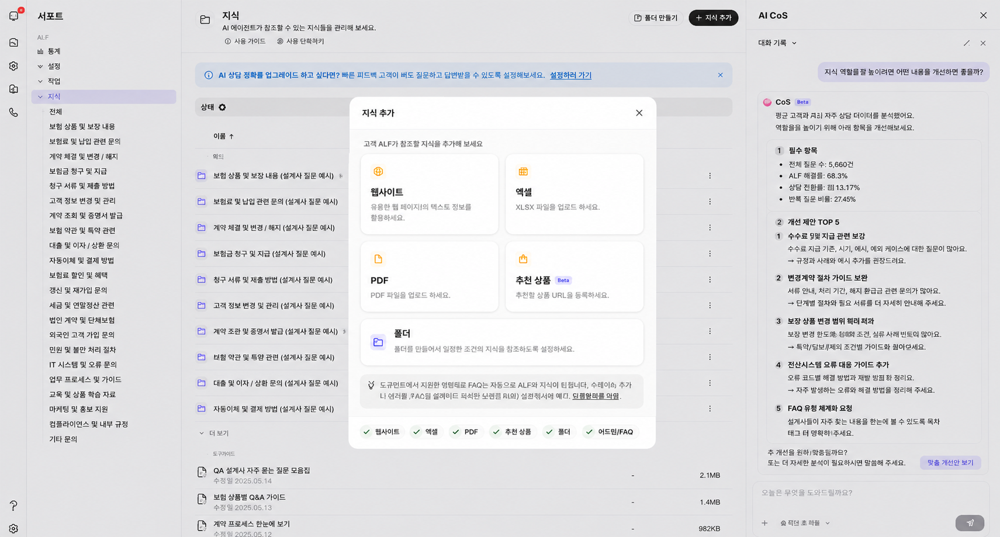
고객 앞에서 바로 답을 얻어 상담이 안 끊깁니다. 경력과 상관없이 누구나 본사 지식으로 무장합니다.
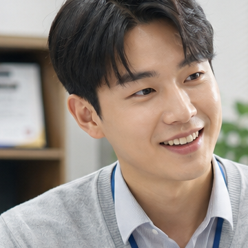
AI가 1차 응대하고, 복잡·예외·규정 판단은 본사 담당자에게 자동 라우팅(팀챗)됩니다.정확성이 필요한 순간엔 사람이 바로 이어받습니다.
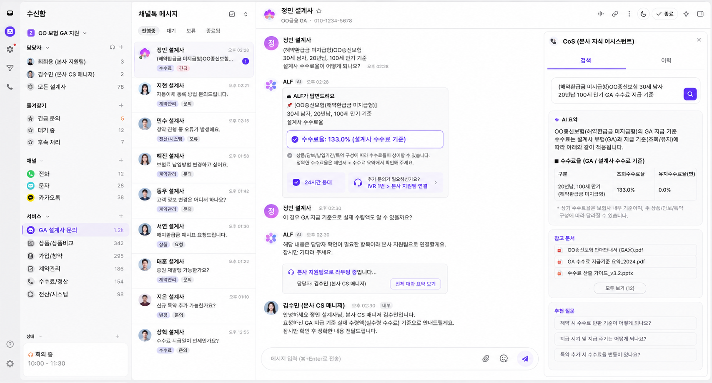
반복에서 해방된 시간을 설계사 교육·코칭·관리에 씁니다. 지원팀이 진짜 지원을 하는 팀이 됩니다.
어떤 질문이 많은지 데이터로 보여, 자주 묻는 건 매뉴얼·교육으로 선제 대응합니다. 문의량 자체가 시간이 갈수록 줄어듭니다.
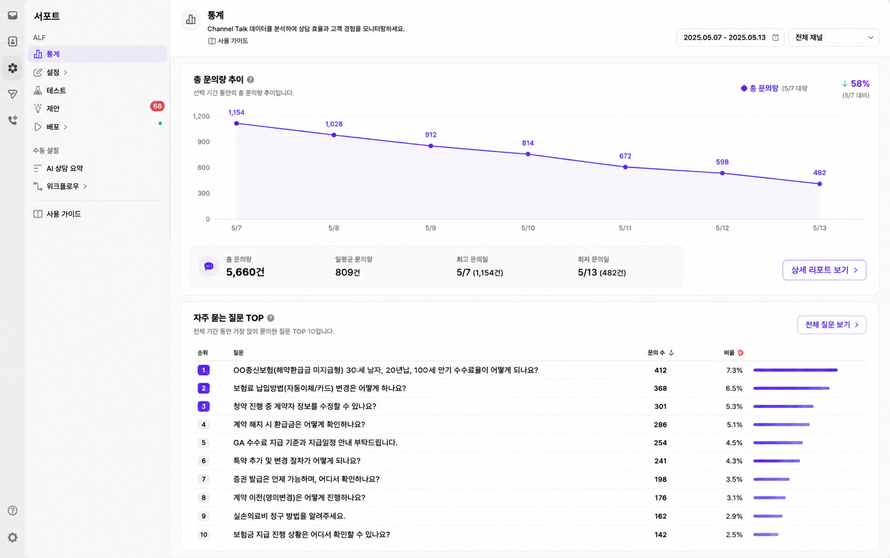
GA가 이미 쓰는 보험 설계·CRM·정산·전자청약 시스템부터 전화·카카오톡 채널·문자·홈페이지 문의까지, 채널톡에 그대로 연동합니다.흩어진 시스템과 채널을 본사가 한 화면에서 상담·응대·관리합니다.
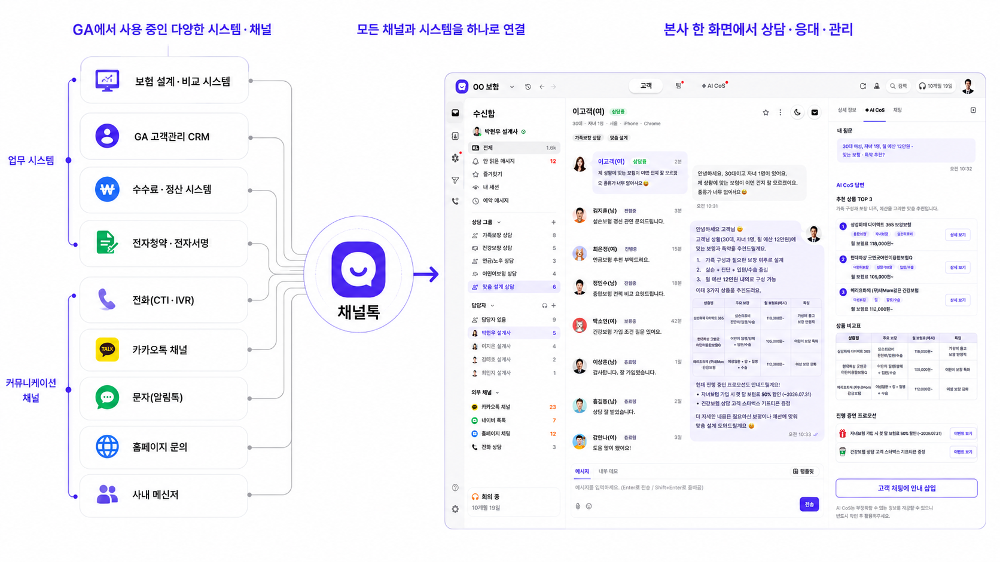
전담 매니저가 셋업·연동·AI 학습까지 함께합니다. 본사는 쓰던 시스템 그대로, 부담 없이 시작하면 됩니다.
채널톡 · Channel Talk담당 ○○○ · ○○○@channel.io